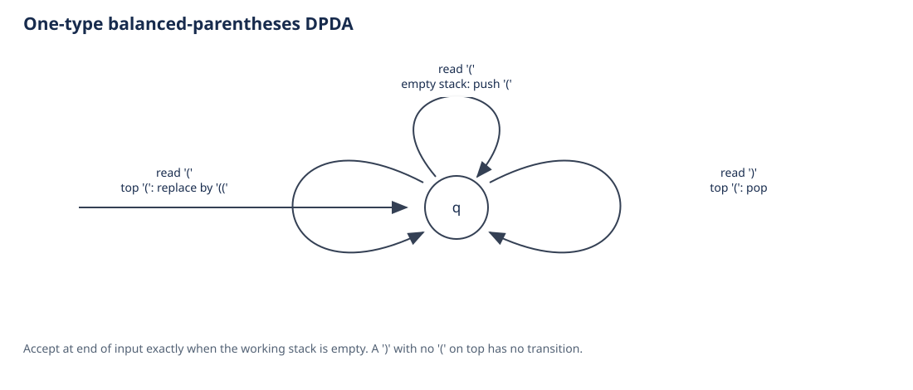
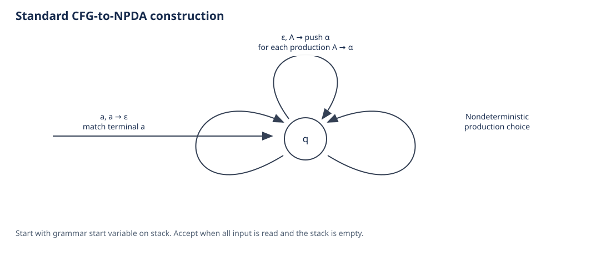
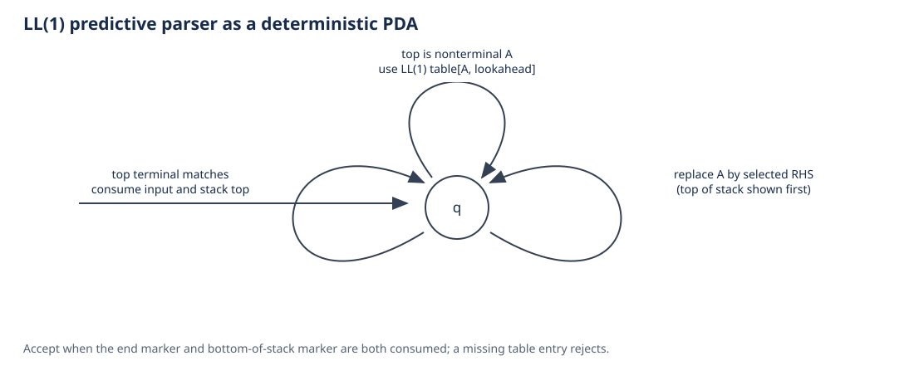
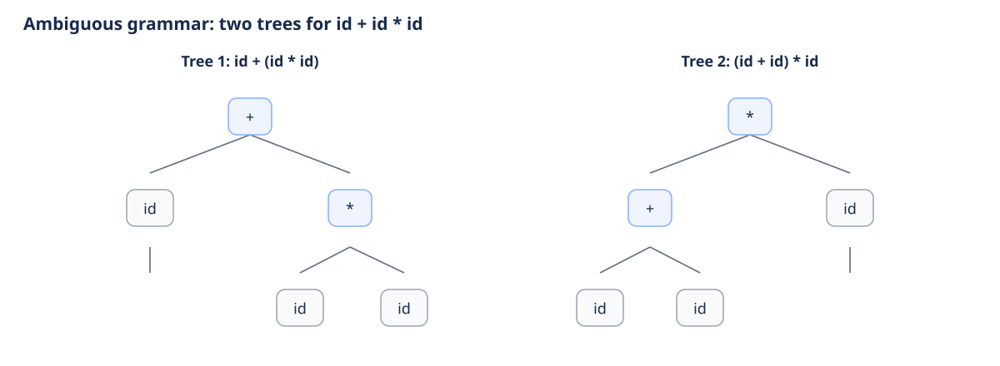
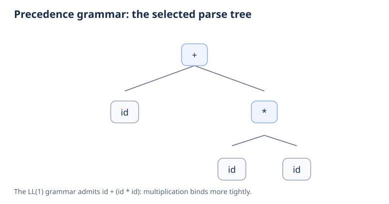
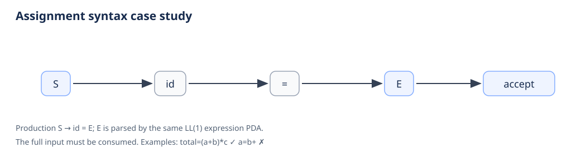

Balanced Parentheses Dpda
Push and pop transitions for balanced parentheses; acceptance is by empty stack.

Original diagrams for the expression, assignment, and balanced-parentheses case studies.
Push and pop transitions for balanced parentheses; acceptance is by empty stack.

The standard one-state nondeterministic construction from a CFG to a PDA.

The deterministic LL(1) parser expands nonterminals and matches terminals using a stack.

Two distinct parse trees show ambiguity in the unprioritized expression grammar.

The implemented precedence grammar gives multiplication priority over addition.

Assignment syntax begins with an identifier and equals sign, then parses an expression.
